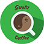
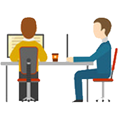
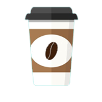

Accueil
Sign in
Sign up


Coworking
un espace de travail partagé, et un réseau de travailleurs encourageant l'échange et l'ouverture aux autres.

Restauration
Nous servons des plats préparés et des boissons à consommer sur place, en échange de paiement.
Services bureautiques
Il vous sera possible de reserver des services de bureautique tel que de l'impression, du stockage en ligne.